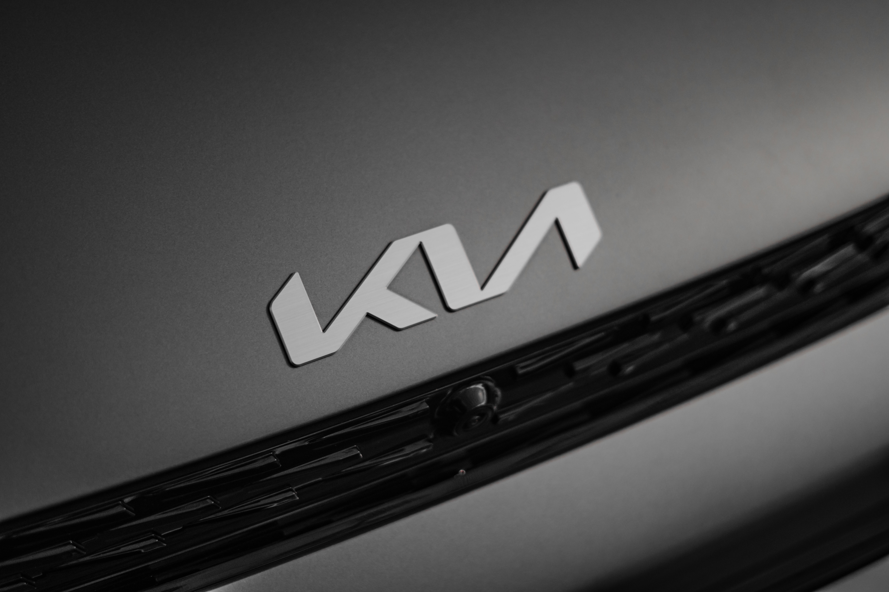

1953년부터 쓰인 로고는 기아산업으로 사명을 바꾼 후 1년 뒤에 쓰인 최초의 로고로, 당시 생산과 제1가공계장 오항선 기장이 제작했다. 이 로고는 설계용 삼각자의 단면을 바탕으로 하여 기계공업을 상징하는 톱니바퀴와 화학공업을 상징하는 벤젠 고리를 그려넣고, 그 내원 속의 6각형 고리 안에 사명의 영자표기인 'KIA'를 넣었다. 해당 로고는 부산공장에서 '3000리호' 생산 당시 자전거 헤드에 부착했다.[9] 